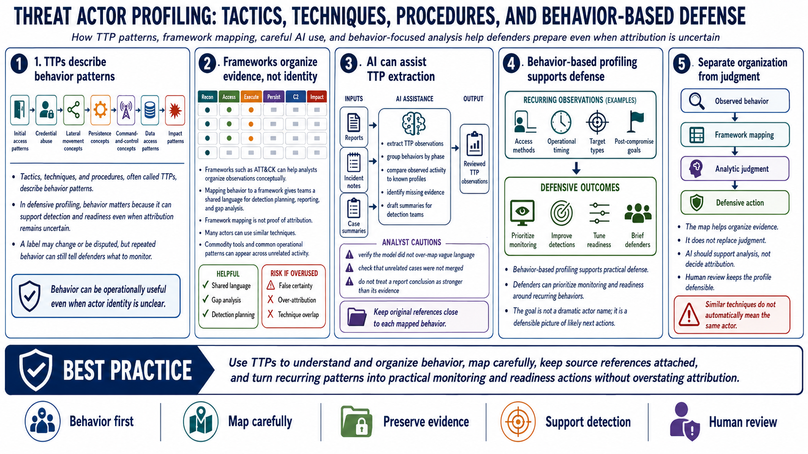

Tactics, Techniques, and Behavioral Patterns
Connecting to LMS... Progress: in progress

Narration
Tactics, techniques, and procedures, often called TTPs, describe behavior patterns. In defensive profiling, behavior matters because it can support detection and readiness even when attribution remains uncertain. A label may change or be disputed, but repeated behavior can still tell defenders what to monitor. Initial access patterns, credential abuse at a high level, lateral movement concepts, persistence concepts, command-and-control concepts, data access patterns, and impact patterns can all support a behavior-focused profile.
Frameworks such as ATT&CK can help analysts organize observations conceptually. Mapping behavior to a framework gives teams a shared language for detection planning, reporting, and gap analysis. But framework mapping is not proof of attribution. Many actors can use similar techniques. Commodity tools and common operational patterns can appear across unrelated activity. The map helps organize evidence; it does not replace judgment.
AI can help extract TTP observations from reports and incident notes. It can group behaviors by phase, compare observed activity to known profiles, identify missing evidence, and draft summaries for detection teams. The analyst should still verify that the model did not over-map vague language, merge unrelated cases, or treat a report's conclusion as stronger than its evidence. The best AI-assisted TTP work keeps original references close to each mapped behavior.
Behavior-based profiling supports practical defense. If a profile shows recurring use of certain access methods, operational timing, target types, or post-compromise goals at a high level, defenders can prioritize monitoring and readiness around those behaviors. The point is not to publish a dramatic actor name. The point is to produce a defensible picture that helps security teams prepare for what the actor is likely to do next.